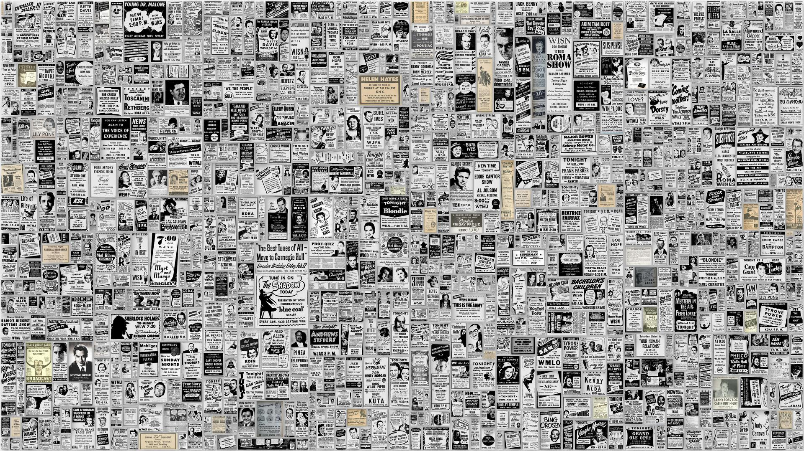

Compare the claim with the evidence
Practical guidance for finding the original source behind a post.
Watch videoLEARN & CHECK
These selected videos introduce practical ways to question claims, identify reliable evidence and slow down before sharing. Videos open directly on YouTube so the page stays reliable when viewed locally.
Use a simple pause, check and compare routine to identify missing context and find stronger evidence.
Watch on YouTubePractical guidance for finding the original source behind a post.
Watch videoLearn why emotional headlines can make weak claims feel convincing.
Watch video
Questions to ask about authorship, evidence, date and purpose.
Watch videoSuggest a correction or request a topic for a future TruthCheck lesson.
Suggest a fact check